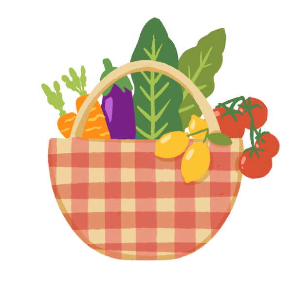
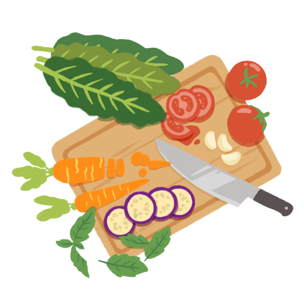
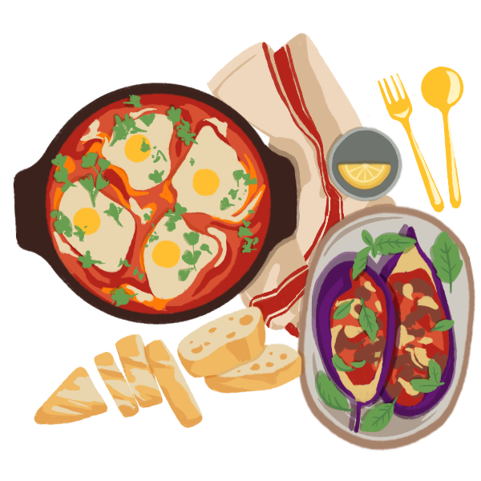

There are countless reasons to eat seasonal produce
- Foods that are in season are typically picked at the peaks of ripeness, which leads to higher concentrations of essential vitamins, minerals, and antioxidants.
- Eating seasonally reduces the need for transportation and energy-intensive methods of cultivation and storage, leading to a lower carbon footprint.
- Choosing seasonal produce supports local farmers and markets.
- Most importantly, seasonal foods are tasty and make life more enjoyable. ♡

I hope this website inspires you to eat fruits and vegetables that are in season today. Whether you pick something new or stick with something familiar, eating seasonal produce is a good choice for yourself and the planet.

A few notes about selection and seasonality
- The selection of produce as well as its seasonality is based on research that is colored by Alma’s bias, opinions, and experience.
- Some liberties are taken when determining the length of an item’s seasonality. For example, some people may regard beet season as June through November, but I define it as year-round.
- Not all items shown are grown in California.
How this website was made
- Iconography and illustrations drawn using Procreate
- Pages designed in Figma
- Website coded with HTML, CSS, and JavaScript
